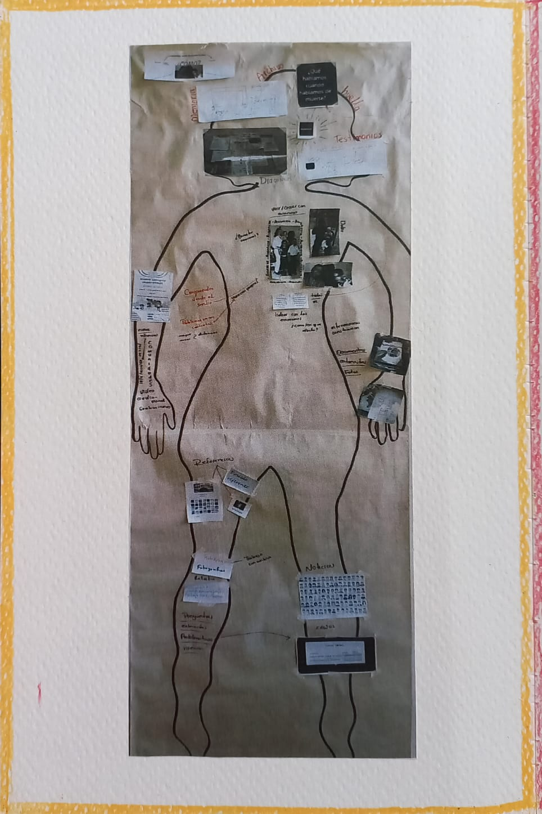
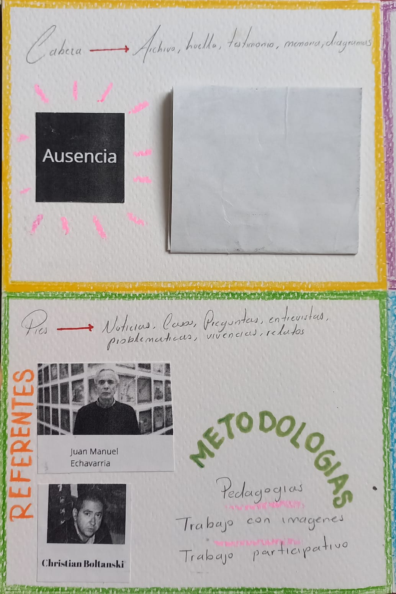
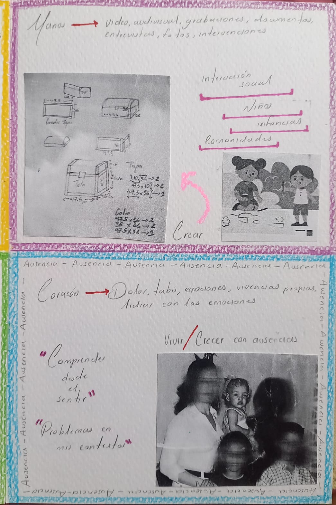
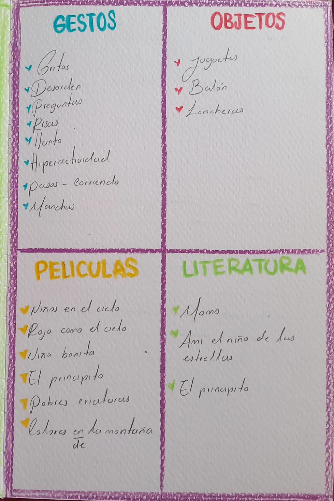
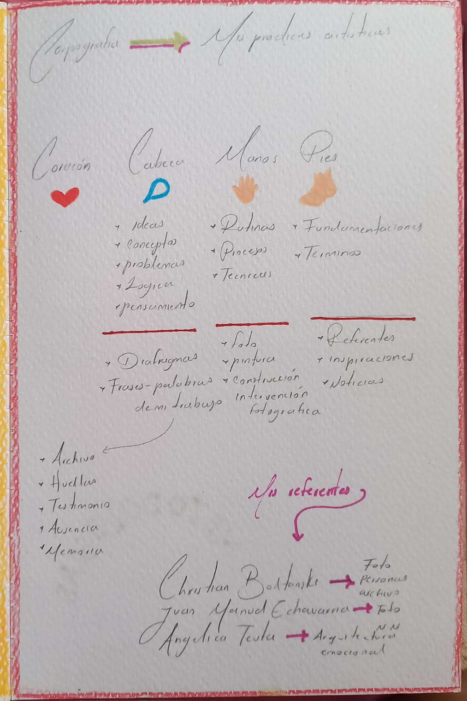
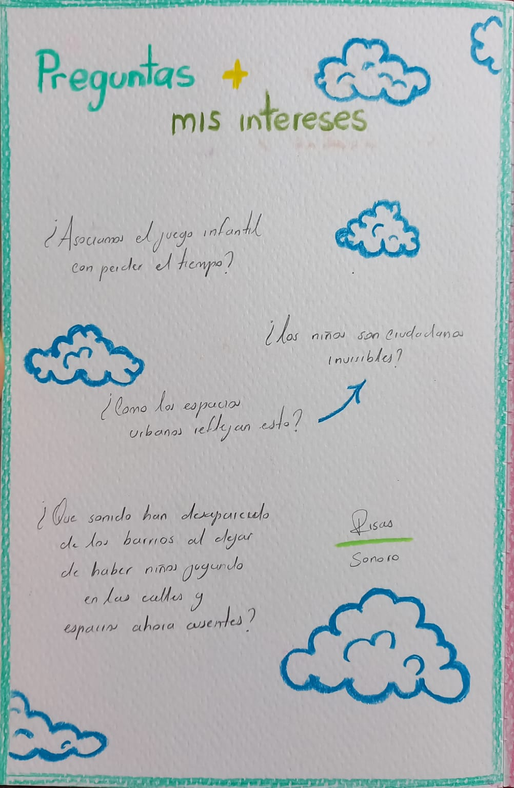
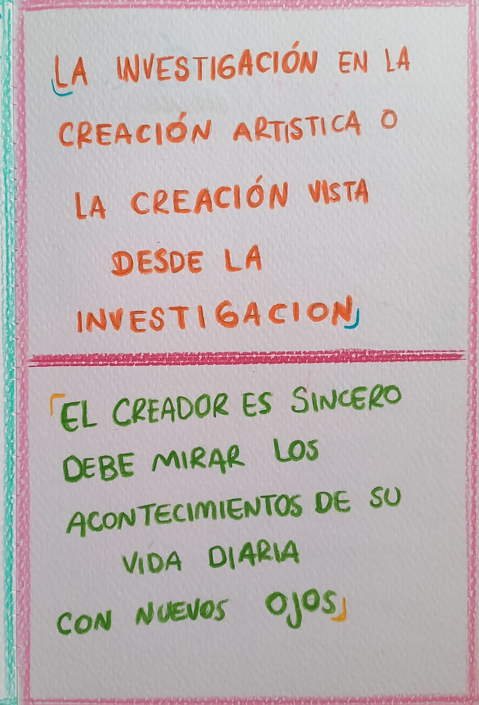
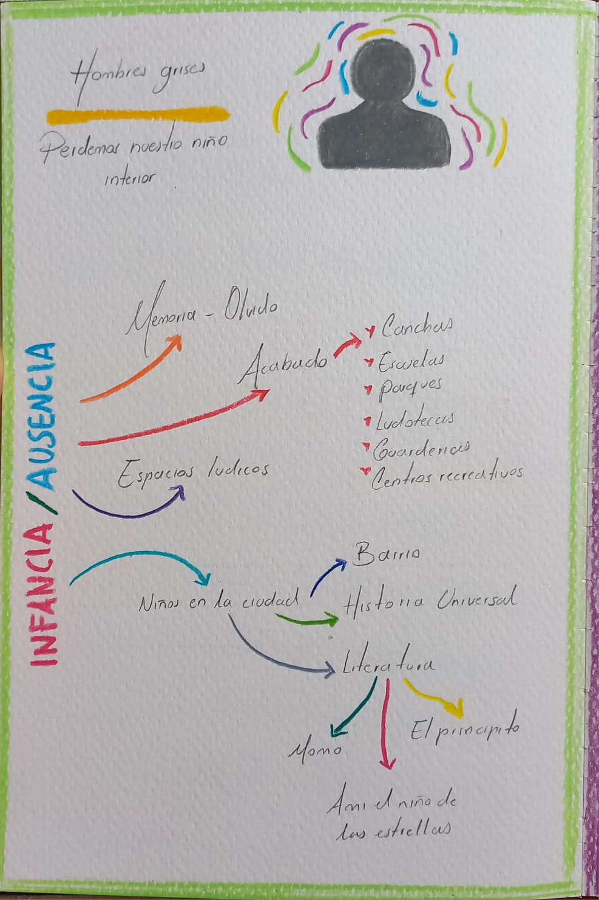
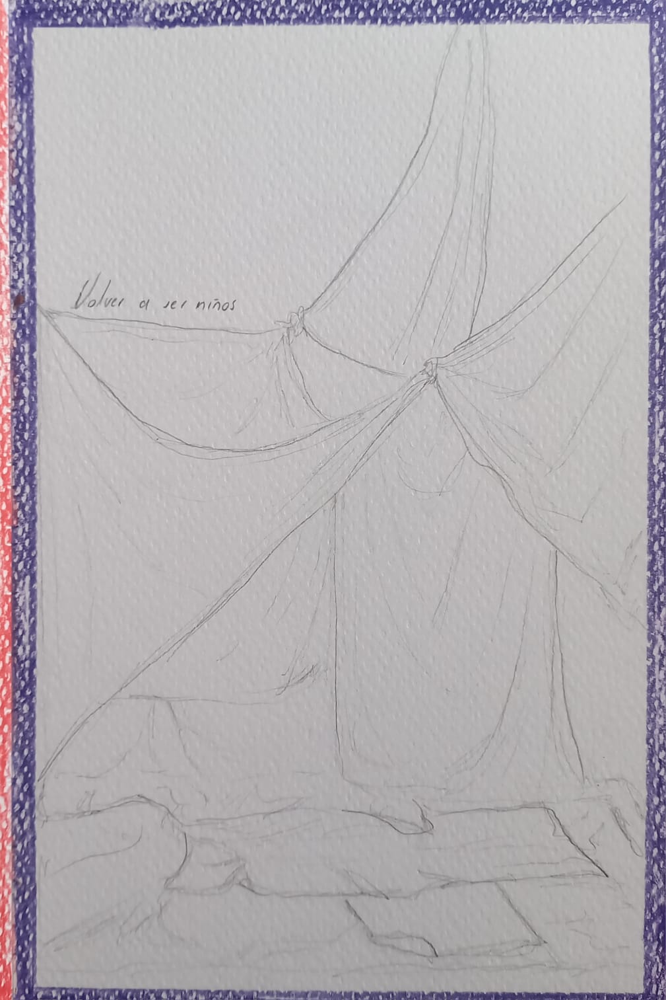
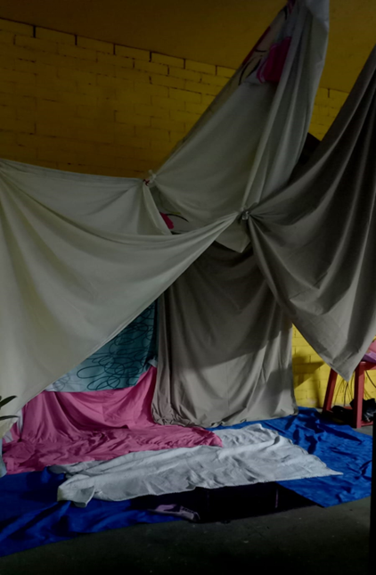

🖼️ Galería / Bitácora









Un viaje artístico hacia la infancia 🌌
Siempre me ha costado soltar la infancia. No porque quiera quedarme ahí, sino porque siento que todo lo que soy hoy empezó en esos juegos, en esos miedos, en esos refugios pequeños que creaba con lo que había.
Esto es un espacio de creación, reflexión y memoria sobre la infancia y el arte como posibilidad de volver a ser niño. Aquí recojo mis aproximaciones materiales, mis preguntas y mis gestos para entender qué significa cuidar y cuidarme a través del juego, la narración y los objetos.
Exploro la infancia como un lugar de construcción de sentido, no como nostalgia, sino como potencia creativa y política.
Cuando era niña construía fuertes de sábanas. Usaba sillas, cobijas y almohadas. Nadie podía entrar si yo no lo permitía. Me he preguntado muchas veces: ¿qué buscaba proteger con esos fuertes? ¿Qué me daba miedo afuera?
Hace poco construí uno. Fue un ejercicio simple y profundo. Mientras lo armaba, sentía que cada cobija era un escudo, cada almohada un guardián. Allí adentro, volví a sentirme seguro. Les conté a mis compañeros un cuento:
Pienso que el arte también es un fuerte de sábanas: un espacio que creamos para resistir la dureza del mundo, para inventar formas de vivir más suaves, más propias, más verdaderas.
El tacto como memoria. Les pedí a mis compañeros que cerraran los ojos y pensaran en eso que les recordaba a su infancia; y usaran el tacto como única guía. Les di plastilina y les pedí que crearan un objeto, lugar o cosa que les recordara su infancia.
Mientras amasaban, vi cómo sus manos se volvían más suaves, cómo sus gestos cambiaban. Algunos sonreían, otros fruncían el ceño intentando recordar detalles. Cuando acabaron, cada figura era distinta: un pollo, un peluche, una ficha de dominó, un diente de león, un control.
Me pregunté:
Esta práctica me enseñó que volver a ser niños no es solo una pregunta mía, sino un deseo colectivo de regresar a esos lugares donde fuimos cuidados, donde jugar era suficiente, donde el tiempo no nos exigía nada más que estar.
Pienso que crear con las manos es una forma de volver a habitar la infancia, de darle cuerpo a lo que solo era recuerdo, de hacerlo presente y tangible, aunque sea en una pequeña figura de plastilina.
Estas preguntas guían mi investigación:
No busco respuestas definitivas. Busco formas de mirar que me permitan seguir preguntando.